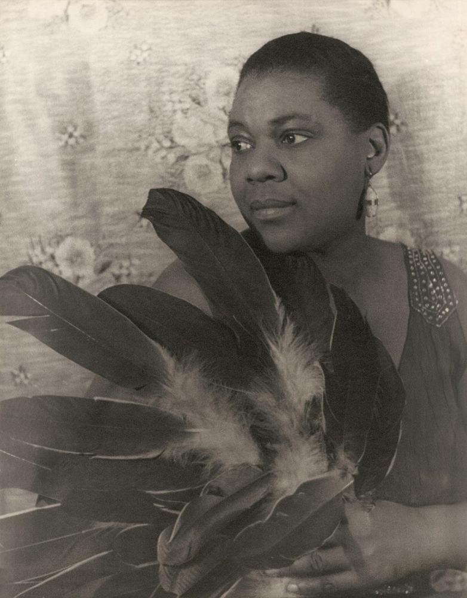

故事
爵士為什麼聽起來有點憂鬱？秘密在幾個被壓低的音。這些音叫藍調音，英文是 blue note。一般的大調音階，聽起來明亮又開心。
早期美國南方的黑人歌手，會把其中幾個音唱低一點。最常被壓低的，是第三音、第七音，還有第五音。有時候只低一點點，低到鋼琴上根本找不到那個鍵。
鋼琴手只好把相鄰的兩個鍵一起按，模仿夾在中間的音。吉他手則是把弦往上推，把音拉高一點點。這幾個音，讓藍調、爵士和搖滾，都多了一點苦味。收藏起來，下次聽爵士，找找那幾個被壓低的音。
故事後面
藍調音是把大調音階裡的第三、第五、第七音唱低一點，有時低到鋼琴上找不到那個鍵。
鋼琴手只好把相鄰兩個鍵一起按，模仿夾在中間的音；吉他手則是把弦往上推。
這幾個音讓藍調、爵士、搖滾都多了一點苦味，是很多音樂共同的根。

這樣聽
聽她怎麼把某些音唱得往下彎，那就是藍調音。
逐句英文
Why does jazz sound a little melancholy? The secret is a few lowered notes.
They are called blue notes.
An ordinary major scale sounds bright and happy.
Early Black singers in the American South sang some of those notes a little lower.
The ones lowered most often are the third, the seventh and the fifth.
Sometimes only slightly, so low that no piano key matches.
So pianists press two neighboring keys together to suggest the note in between.
Guitarists bend the string to stretch the pitch.
These notes give blues, jazz and rock their touch of bitterness.
Save this. Next time you listen to jazz, hunt for those lowered notes.
查證筆記與出處
樂理常識。「吉他推弦把音拉高」是從低一點的音往上推，畫面可以用推弦動作。
一分鐘影片版在 Instagram @jazz101tw。